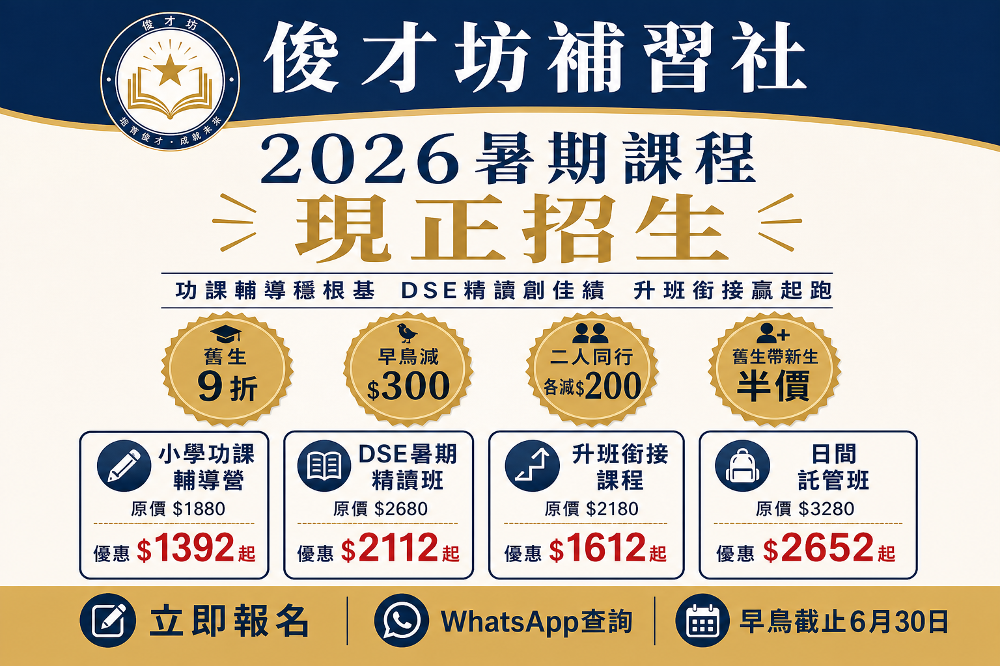
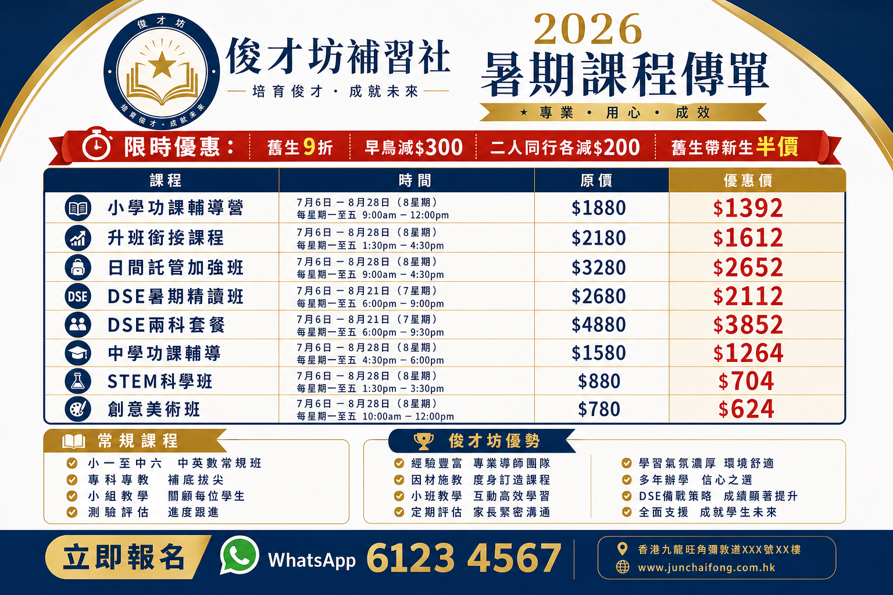
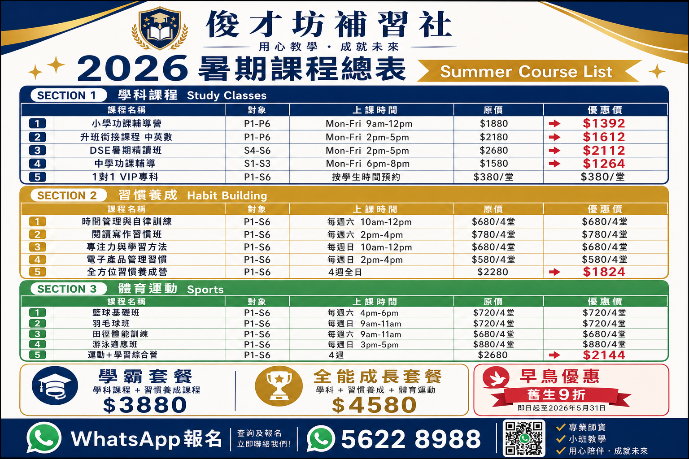

俊才坊補習社
接手升級完整報告 · Upgrade Edition v3.0
營運評估 × 財務分析 × 課程設計 × 宣傳策略
暑期課程總表（學科 · 習慣養成 · 體育運動）
報告日期：2026 年 6 月
教育局註冊補習社 · 1,000 呎 · 50 名學生基礎
目錄
- 執行摘要與決策建議
- 中心現況與財務拆解
- 投資回報分析表
- 營運模式（Operation Model）
- 核心問題診斷與解決方案
- 營運設置與行政架構
- 服務策略與課程定位
- 升級後月費定價（調整版）
- 2026 暑期課程總表（學科 · 習慣 · 運動）
- 套餐設計與優惠方案
- 品牌宣傳素材
- 招生與保留策略
- 90 天行動路線圖
- 行政系統實施手冊
- 簽約前核查清單
一、執行摘要與決策建議
結論：這是一個值得考慮的投資機會，但必須附帶條件。
頂手費 $70,000 極具吸引力，50 名高消費力學生基礎確保初期現金流，教育局正式牌照更是難能可貴。然而，高昂固定成本（租金 $40,000/月 + 兩位全職導師 $45,000/月）是主要風險。
| 評估項目 | 判斷 |
|---|
| 實際成本與資源 | 初始投入約 $275,000–330,000；月固定成本約 $107,500 |
| 財務可行性 | 有條件可行——租金談判成功是關鍵前提 |
| 服務方向 | 聚焦功課輔導 + DSE/升班；新增習慣養成 + 體育運動作差異化 |
| 回本周期 | 保守 7–8 個月；若學生流失或租金未減，可能延長至 12–18 個月 |
| 升級後目標月淨利 | 由 $40,000 提升至 $60,000–80,000 |
三項必須達成的接手條件
✅ 條件 1：租金談至 $35,000 以下（或獲 2 個月免租期）
✅ 條件 2：6 個月銀行流水核實月淨利 ≥ $30,000
✅ 條件 3：兩位全職導師書面確認留任至少 6 個月
二、中心現況與財務拆解
2.1 基本資料
| 項目 | 資料 |
|---|
| 中心名稱 | 俊才坊補習社 |
| 實用面積 | 1,000 呎 |
| 現有學生 | 約 50 名 |
| 每名學生平均月消費 (ARPU) | 約 $3,000（中高水平） |
| 頂手費 | $70,000 |
| 月租金 | $40,000（呎租 $40，偏高，可談判） |
| 賣方宣稱月淨利 | $40,000 |
| 牌照 | 教育局學校註冊證明書（正式） |
2.2 每月營運成本
| 成本項目 | 月費（港元） | 備註 |
|---|
| 租金 | $40,000 → 目標 $32,000–35,000 | 佔成本 37%，談判空間最大 |
| 全職導師 ×2 | $40,000–50,000 | 最大「人質風險」 |
| 兼職導師 | $10,000–15,000 | 時薪 $100–150 |
| 水電 | $5,500 | 商業用電 |
| 會計及雜費 | $5,000 | |
| 市場推廣（接手後新增） | $3,000–5,000 | |
| 合計 | $103,500–115,500 | |
2.3 初始投資
| 項目 | 金額 |
|---|
| 頂手費 | $70,000 |
| 租金按金（2 個月）+ 上期 | $80,000–120,000 |
| 營運儲備金 | $100,000 |
| 環境翻新與清潔 | $20,000–30,000 |
| 合計 | $270,000–330,000 |
2.4 收入預測（三種情境）
| 情境 | 學生數 | 月營收 | 月成本 | 月淨利 |
|---|
| 悲觀（流失 20%） | 40 | $112,000 | $107,500 | $4,500 |
| 保守（維持現狀） | 50 | $150,000 | $107,500 | $42,500 |
| 目標（+20 人） | 70 | $196,000 | $115,000 | $81,000 |
| 樂觀（+40 人） | 90 | $225,000 | $130,000 | $95,000 |
盈虧平衡點：月營收約 $108,000，對應約 39 名學生（ARPU $2,800）。現有 50 人僅有 11 人緩衝。
三、投資回報分析表
以下回報模型基於升級後月費定價及租金談判成功（$35,000/月）的假設。初始投資取中位數 $300,000（頂手費 + 按金 + 儲備金 + 翻新）。
3.1 月度回報情景分析
| 情景 | 學生數 | 平均月費
(ARPU) |
月營收 | 月成本 | 月淨利 |
年化淨利 | 投資回報率
(年化) | 回本週期 |
| 悲觀 | 40 | $2,800 |
$112,000 | $105,000 | $7,000 |
$84,000 | 28% | 43 個月 |
| 保守（維持現狀） | 50 | $3,000 |
$150,000 | $105,000 | $45,000 |
$540,000 | 180% | 7 個月 |
| 升級目標 | 60 | $3,200 |
$192,000 | $110,000 | $82,000 |
$984,000 | 328% | 4 個月 |
| 目標（擴張） | 70 | $3,200 |
$224,000 | $118,000 | $106,000 |
$1,272,000 | 424% | 3 個月 |
| 樂觀 | 85 | $3,000 |
$255,000 | $128,000 | $127,000 |
$1,524,000 | 508% | 2 個月 |
升級目標解讀（60 人 × $3,200）：透過月費調整 + 習慣/運動加購，將 ARPU 由 $3,000 提升至 $3,200，月淨利可由 $45,000 提升至 $82,000（+82%），無需大幅增加學生數。
3.2 12 個月累積回報預測（升級目標情景）
| 月份 | 階段 | 學生數 | 月營收 |
月成本 | 月淨利 | 累積淨利 | 累積回報率 |
| M1 | 接手維穩 | 50 | $150,000 | $110,000 | $40,000 | $40,000 | 13% |
| M2 | 環境翻新 | 50 | $155,000 | $130,000* | $25,000 | $65,000 | 22% |
| M3 | 暑假招生 | 65 | $210,000 | $125,000 | $85,000 | $150,000 | 50% |
| M4 | 暑假高峰 | 75 | $250,000 | $135,000 | $115,000 | $265,000 | 88% |
| M5 | 暑假高峰 | 75 | $245,000 | $130,000 | $115,000 | $380,000 | 127% |
| M6 | 新學期轉換 | 60 | $192,000 | $110,000 | $82,000 | $462,000 | 154% |
| M7–M9 | 穩定營運 | 60 | $192,000 | $110,000 | $82,000 | $708,000 | 236% |
| M10–M12 | 優化盈利 | 65 | $208,000 | $112,000 | $96,000 | $996,000 | 332% |
*M2 含一次性翻新支出 $20,000。暑假 M3–M5 含額外兼職導師成本。累積回報率 = 累積淨利 ÷ 初始投資 $300,000。
3.3 暑假額外回報（一次性增量）
| 項目 | 保守 | 目標 | 樂觀 |
|---|
| 暑假報名人數 | 55 人 | 70 人 | 85 人 |
| 暑期人均消費 | $2,800 | $3,200 | $3,500 |
| 暑假兩月總營收 | $154,000 | $224,000 | $297,500 |
| 暑假額外成本 | $30,000 | $45,000 | $55,000 |
| 暑假兩月淨利 | $62,000 | $89,000 | $121,750 |
| 折合每月額外淨利 | $31,000 | $44,500 | $60,875 |
3.4 關鍵財務指標摘要
| 指標 | 現況 | 升級目標（12 個月後） |
|---|
| 學生數 | 50 | 60–65 |
| 平均月費 (ARPU) | $3,000 | $3,200 |
| 月營收 | $150,000 | $192,000–208,000 |
| 月淨利 | $40,000–45,000 | $82,000–96,000 |
| 淨利潤率 | 27–30% | 42–46% |
| 初始投資回本 | 7–8 個月 | 4–5 個月（含暑假） |
| 首年累積回報率 | ~180% | ~332% |
四、營運模式（Operation Model）
4.1 商業模式總覽
俊才坊升級營運模式：以「功課輔導」為流量入口，透過「DSE 精讀」創造高利潤，以「習慣養成 + 體育運動」提升客單價與差異化，形成學業 × 習慣 × 體能三位一體的訂閱式教育服務。
| 模式要素 | 內容 | 說明 |
|---|
| 價值主張 | 小班督導 + 名校試題 + 全方位成長 | 不只補功課，更培養自律與體能 |
| 收入模式 | 月費訂閱 + 暑期密集班 + 套餐捆綁 | 穩定現金流 + 季節性高峰 |
| 客戶族群 | 雙職家庭、DSE 考生、重視品格家長 | 地區 500 米內小學至中學 |
| 核心資源 | 牌照、導師、Past Paper 庫、校舍 | 1,000 呎 + 50 人客戶基礎 |
| 關鍵活動 | 教學、招生、家長溝通、行政管理 | 營運者每日 2–4 小時 |
| 成本結構 | 租金 33% + 人事 55% + 其他 12% | 固定成本為主，邊際成本低 |
4.2 營運流程模型
| 流程階段 | 觸發點 | 核心動作 | 負責人 | 產出 |
|---|
| 1. 招生獲客 | 舊生轉介 / 派單 / 網上 | 諮詢 → 試堂 → 報名 → 繳費 | 營運者 | 新學生合約 |
| 2. 課程交付 | 每日課表 | 點名 → 教學 → 功課檢查 → 回饋 | 導師團隊 | 學習進度記錄 |
| 3. 家長溝通 | 每週 / 每月 | WhatsApp 進度報告、欠費提醒 | 營運者 | 家長滿意度 |
| 4. 續報升級 | 每月月底 / 學期結束 | 續報優惠 → 加購習慣/運動班 | 營運者 + 導師 | 提升 ARPU |
| 5. 財務結算 | 每月 1 日 | 收費核對 → 成本結算 → 利潤分析 | 營運者 | 月度 P&L 報表 |
4.3 收入結構模型（升級後目標）
| 收入來源 | 佔比目標 | 毛利率 | 月費範圍 | 策略角色 |
|---|
| 功課輔導（小學+中學） | 45% | 35% | $1,580–2,480 | 現金流基石，留住學生 |
| DSE / 升班專科班 | 30% | 55% | $1,180/科 | 利潤引擎，小班高產值 |
| 習慣養成班 | 12% | 60% | $580–780/月 | 差異化溢價，提升 ARPU |
| 體育運動班 | 8% | 45% | $680–720/月 | 配套加購，增加黏性 |
| VIP 1對1 / 1對2 | 5% | 65% | $320–420/堂 | 高溢價，填補空檔時段 |
4.4 三階段營運模型
| 階段 | 時期 | 核心目標 | 學生目標 | 月淨利目標 | 關鍵行動 |
|---|
Phase 1
維穩期 |
M1–M2 |
零流失、穩住導師 |
50 人 |
$40,000 |
安撫導師、翻新環境、數碼化行政 |
Phase 2
擴張期 |
M3–M5 |
暑假爆發式招生 |
65–75 人 |
$85,000–115,000 |
暑期三類課程全開、套餐推廣、舊生轉介 |
Phase 3
盈利期 |
M6–M12 |
新學期轉常規、優化利潤 |
60–65 人 |
$82,000–96,000 |
月費調整上線、習慣/運動訂閱、導師體系轉型 |
4.5 空間使用模型（1,000 呎產值最大化）
| 空間 | 時段 | 用途 | 每呎月產值 |
|---|
| 主課室 A | 平日 3:30–8:30pm | 功課輔導 + DSE 班（10–12 人） | $150–180/呎 |
| 主課室 B | 上午 9am–12pm | 日間託管 / 功課營（暑假） | $100–130/呎 |
| 多用途房 | 彈性時段 | 1對1 VIP / 1對2 專科 | $200–250/呎 |
| 全中心 | 週末 | 習慣班 + 體育班 + 興趣班 | $80–100/呎 |
五、核心問題診斷與解決方案
問題一：兩位全職導師人工貴，學生跟隨導師
這是接手傳統補習社最常見的「人質危機」。兩位導師掌握教學關係和家長信任，若離職可能導致大量學生流失。
- 首三個月「維穩」：絕不立即解僱或減薪，承諾待遇不變，可提供過渡期留任獎金
- 引入兼職助教：安排跟隨老導師上課，讓學生逐漸適應新面孔
- 標準化教材庫：將 Past Paper 和筆記掃描分類，建立雲端資料庫，降低對個人依賴
- 長遠薪酬轉型：半年後商討轉為「顧問導師」或高級兼職，降低固定開支
問題二：租金偏高（1000 呎 $40,000）
- 簽約前親自與業主會面，以「新營運者、承諾長租、計劃翻新」為籌碼
- 目標：壓低至 $32,000–35,000，或爭取 1–2 個月免租期
- 善用多用途房：規劃為 1對1 VIP 室，或週末外租給興趣班導師
問題三：環境老舊，影響品牌形象
- 投入 $20,000–25,000 快速翻新：斷捨離、粉刷、更換 LED 燈、更新招牌
- 引入數碼化管理：排課系統、WhatsApp Business、學習進度報告
- 制定標準教學流程：課前小測 → 講解 → 操練 → 課後總結
六、營運設置與行政架構
6.1 人力配置（50–70 名學生規模）
| 角色 | 職責 | 月薪/成本 |
|---|
| 您（營運者） | 招生、財務、家長溝通、策略 | 親自處理行政（每日 2–4 小時） |
| 全職導師 ×2 | 功課輔導、DSE 班、家長關係 | $40,000–50,000 |
| 兼職導師 ×2–4 | 代課、小班、興趣/運動班 | $10,000–20,000 |
| 行政（學生 70+ 後考慮） | 點名、收費、排課 | $8,000–12,000 |
6.2 行政系統總覽（已建立）
已建立完整行政系統檔案：俊才坊行政系統.xlsx（10 個工作表）
路徑：jun-caifang/admin/output/俊才坊行政系統.xlsx
| 工作表 | 用途 | 更新頻率 | 實施週次 |
|---|
| 學生資料庫 | 學生、家長、課程、月費、付款狀態 | 有新報名時 | Week 1 ★ |
| 收費記錄 | FPS / PayMe 轉帳、收據編號 | 每次收款 | Week 1 ★ |
| 出席記錄 | 每日點名、遲到、缺席、功課完成 | 每日放學後 | Week 2 |
| 排課表 | 每週課程、導師、班額、已報人數 | 每學期 | Week 2 |
| 課室使用表 | 課室A/B/VIP室時段分配 | 每週檢視 | Week 2 |
| 財務月結 | 月營收、各項成本、淨利、淨利率 | 每月底 | Month 1 |
| 學習進度 | 出席率、測驗分數、導師評語 | 每月 | Month 1 |
| 每日行政 | 營運者每日 10 項檢查任務 | 每日 | Week 1 ★ |
| 家長通訊 | 查詢、欠費、招生、跟進狀態 | 每次通訊 | Week 1 |
| 導師資料 | 薪酬、合約、通知期、負責課程 | 有變動時 | Week 1 ★ |
★ = 接手後第一週必須完成
七、服務策略與課程定位
7.1 四大方向評估
| 方向 | 市場需求 | 利潤率 | 優先級 | 升級策略 |
|---|
| 功課輔導 | ★★★★★ | 30–40% | P1 核心 | 維持現有 50 人基礎 |
| DSE/升班班 | ★★★★☆ | 50–60% | P1 核心 | 暑假黃金檔期主力 |
| 日間託管 | ★★★★☆ | 30–40% | P2 輔助 | 上午時段活化 |
| 興趣班 | ★★★☆☆ | 中 | P3 增值 | 與學術班打包銷售 |
| 習慣養成（新增） | ★★★★☆ | 50%+ | P1 差異化 | 家長願付溢價的軟技能 |
| 體育運動（新增） | ★★★★☆ | 40–50% | P2 差異化 | 動靜結合，提升客單價 |
升級定位：由傳統「補習社」升級為「學業 + 習慣 + 體能」全方位成長中心。
一句話賣點：「俊才坊不只補功課，更培養孩子會自己學、懂得自律、體魄健全。」
八、升級後月費定價（調整版）
以下為升級版月費，建議於接手後第 6 個月（新學期）起實施。現有 50 名舊生可享有 6 個月凍結期（維持原價），以降低流失風險。
8.1 學科課程月費調整對照
| 課程 | 對象 | 時間 | 原月費 | 升級月費 | 調幅 |
|---|
| 小學功課輔導（每日） | P1–P6 | 一至五 3:30–6:30pm | $1,680 | $1,980 | +18% |
| 小學功課輔導（每週 3 日） | P1–P6 | 自選 3 日 | $1,280 | $1,580 | +23% |
| 中學功課輔導（每日） | S1–S3 | 一至五 4:00–7:00pm | $2,180 | $2,480 | +14% |
| 中學功課輔導（每週 3 日） | S1–S3 | 自選 3 日 | $1,680 | $1,980 | +18% |
| DSE 專科（每科） | S4–S6 | 每週 2 堂 | $980 | $1,180 | +20% |
| DSE 公民科 | S4–S6 | 週六 10am–12pm | $880 | $980 | +11% |
| DSE 三科套餐 | S4–S6 | — | $2,580 | $3,180 | +23% |
| 1對1 VIP | P1–S6 | 彈性預約 | $380/堂 | $420/堂 | +11% |
| 1對2 VIP | P1–S6 | 彈性預約 | $280/人 | $320/人 | +14% |
8.2 新增月費項目（習慣 + 運動訂閱制）
| 課程 | 內容 | 時間 | 月費 | 定位 |
|---|
| 時間管理與自律班 | 作息規劃、目標設定 | 週六 10am–12pm（每月 4 堂） | $680/月 | 習慣訂閱 |
| 閱讀寫作習慣班 | 每日閱讀、寫作練習 | 週六 2pm–4pm（每月 4 堂） | $780/月 | 習慣訂閱 |
| 專注力與學習方法班 | 記憶法、筆記術 | 週日 10am–12pm（每月 4 堂） | $680/月 | 習慣訂閱 |
| 籃球 / 羽毛球班 | 基礎技術 + 體能 | 週末（每月 4 堂） | $720/月 | 運動訂閱 |
| 田徑體能訓練 | 跑步、跳遠、體能 | 週六 9am–11am（每月 4 堂） | $680/月 | 運動訂閱 |
8.3 常規月費套餐（推動 ARPU 提升至 $3,200+）
| 套餐 | 包含內容 | 原價合計 | 套餐月費 | 節省 |
|---|
| 學霸月套 | 功課輔導（每日）+ 1 科 DSE | $3,160 | $2,880/月 | $280 |
| 全能月套 | 功課輔導 + 1 習慣班 + 1 運動班 | $3,380 | $2,980/月 | $400 |
| 進階月套 | 功課輔導 + DSE 兩科 + 習慣班 | $4,340 | $3,880/月 | $460 |
ARPU 提升邏輯：現有學生平均 $3,000/月（多報 1–2 科）。透過月費調整（+$200）及習慣/運動加購（+$680–780），目標將平均月費提升至 $3,200–3,500，無需大幅增加學生數量即可顯著提升利潤。
8.4 調價實施策略
| 階段 | 時間 | 對象 | 做法 |
|---|
| 凍結期 | 接手 M1–M6 | 現有 50 名舊生 | 維持原月費，不加價，確保零流失 |
| 新價實施 | 新學期 M7 起 | 所有新生 | 直接按升級月費收費 |
| 舊生過渡 | M7 起 | 舊生（自願） | 加購習慣/運動班享 9 折，作為加價替代方案 |
| 全面調價 | M10 起 | 所有舊生 | 按新價收費，提前 1 個月書面通知 |
九、2026 暑期課程總表
暑期課程分三大類：學科課程、習慣養成、體育運動。每期 4 週，可靈活選擇一期或兩期連報。
9.1 學科課程 Study Classes
| 課程 | 對象 | 時間 | 原價 | 優惠價 |
|---|
| 小學功課輔導營 | P1–P6 | 一至五 9am–12pm | $1,880 | $1,392 起 |
| 升班銜接（中英數） | P6→S1 / S3→S4 | 一至五 2pm–5pm | $2,180 | $1,612 起 |
| DSE 暑期精讀班 | S4–S6 | 一至五 2pm–5pm | $2,680 | $2,112 起 |
| 中學功課輔導 | S1–S3 | 一至五 6pm–8pm | $1,580 | $1,264 起 |
| 日間託管加強班 | P1–P6 | 一至五 9am–6pm | $3,280 | $2,652 起 |
| 1對1 VIP 專科 | P1–S6 | 彈性預約 | — | $380/堂 |
9.2 習慣養成 Habit Building
| 課程 | 內容重點 | 時間 | 收費 |
|---|
| 時間管理與自律訓練 | 作息規劃、番茄鐘、目標設定 | 週六 10am–12pm | $680 / 4堂 |
| 閱讀寫作習慣班 | 每日閱讀、摘錄、寫作練習 | 週六 2pm–4pm | $780 / 4堂 |
| 專注力與學習方法 | 記憶法、筆記術、溫習策略 | 週日 10am–12pm | $680 / 4堂 |
| 電子產品管理習慣 | 屏幕時間、自律使用手機/iPad | 週日 2pm–4pm | $580 / 4堂 |
| 全方位習慣養成營 | 四項整合，4 週全日 | 4 週全日 | $2,280 → $1,824 |
9.3 體育運動 Sports
| 課程 | 內容 | 時間 | 收費 |
|---|
| 籃球基礎班 | 運球、投籃、團隊配合 | 週六 4pm–6pm | $720 / 4堂 |
| 羽毛球班 | 握拍、步法、對打 | 週日 9am–11am | $720 / 4堂 |
| 田徑體能訓練 | 跑步、跳遠、體能基礎 | 週六 9am–11am | $680 / 4堂 |
| 游泳適應班 | 水性、基本泳式 | 週日 3pm–5pm | $880 / 4堂 |
| 運動+學習綜合營 | 上午學習 + 下午運動，4 週 | 4 週 | $2,680 → $2,144 |
9.4 暑期每週時間總表
| 時段 | 週一至五 | 週六 | 週日 |
|---|
| 9am–12pm | 小學功課輔導營 / 日間託管 | 田徑體能 / 時間管理習慣班 | 羽毛球班 |
| 2pm–5pm | 升班銜接 / DSE 精讀 | 閱讀寫作習慣班 | 電子產品管理班 |
| 4pm–6pm | — | 籃球基礎班 | — |
| 6pm–8pm | 中學功課輔導 | — | 游泳適應班 |
十、套餐設計與優惠方案
10.1 暑期套餐
| 套餐 | 包含內容 | 套餐價 | 適合對象 |
|---|
| 學霸套餐 | 1 項學科課程 + 2 項習慣班 | $3,880 | 重視成績 + 學習方法 |
| 全能成長套餐 | 學科 + 習慣 + 1 項運動 | $4,580 | 全方位增值（主推） |
| 暑期全包套餐 | 學科全日 + 習慣營 + 運動 | $5,880 | 雙職家庭首選 |
10.2 優惠方案
| 優惠 | 詳情 | 適用對象 |
|---|
| 舊生優先 9 折 | 現有學生報讀任何暑期課程 | 現有學生 |
| 早鳥優惠 | 6 月 30 日前報名，每科減 $300 | 所有學生 |
| 二人同行 | 兩位新生同時報名，各減 $200 | 新生 |
| 舊生帶新生 | 新生首月學費半價 | 經介紹之新生 |
| 多科套餐 | 報讀 2 科或以上，額外 95 折 | 所有學生 |
| 兩期連報 | 暑期兩期連報，第二期減 $500 | 所有學生 |
優惠疊加示例：小五舊生，6 月 25 日前報升班預習（原價 $1,880）
舊生 9 折 $1,692 → 早鳥減 $300 → 實付 $1,392（省 26%）
十一、品牌宣傳素材
圖 1：俊才坊品牌 Logo · 培育俊才 · 成就未來

圖 2：2026 暑期招生海報（WhatsApp / 社交媒體用）

圖 3：暑期課程 A4 傳單（學校門口派發用）

圖 4：暑期課程總表（學科 · 習慣養成 · 體育運動）
十二、招生與保留策略
12.1 目標客戶群體
| 客群 | 痛點 | 推薦課程 | 話術 |
|---|
| 雙職家庭 | 放學後無人看管 | 功課輔導營 / 日間託管 | 「放工前有人睇住功課」 |
| 升中/升大班 | 擔心銜接 | 升班銜接課程 | 「暑假不補，開學追唔返」 |
| DSE 考生 | 公開試壓力 | DSE 精讀班 | 「Past Paper 操練，實戰見真章」 |
| 重視品格家長 | 孩子缺乏自律 | 習慣養成班 | 「成績係短期，習慣係一世」 |
| 怕孩子懶散 | 暑假頹廢 | 運動+學習綜合營 | 「動靜結合，暑假唔會頹」 |
12.2 招生渠道
| 渠道 | 成本 | 預期效果 | 時機 |
|---|
| 舊生轉介（同行半價） | $0（以折扣代替） | 每 10 舊生帶 2–3 新生 | 全年 |
| 舊生暑假優先報名（9 折） | 收入減 10% | 穩住 50 人基礎 | 接手第 1 週 |
| 學校門口派單張 | $2,000–3,000 | 每 1,000 張約 5–15 查詢 | 暑假前 4 週 |
| 地區 Facebook 家長群 | $0 | 觸及區內家長 | 接手第 2–3 週 |
| Instagram 學習貼士 | $0（時間成本） | 建立專業形象 | 持續 |
12.3 學生保留策略
- 連續報讀 3 個月享 95 折（提高續報率 10–15%）
- 多科打包套餐（提升 ARPU，降低單科退費風險）
- 每月 WhatsApp 學習進度報告（家長感知價值）
- 數碼化出席、收費、排課（建立專業信任）
- 暑假銜接常規班（9 月開學後順利轉換）
十三、90 天行動路線圖
| 時期 | 核心任務 | 成功指標 | 財務目標 |
|---|
| Day 0（簽約前） | 核查財務、租約、導師合約；談判租金 | 三項條件齊備 | — |
| Day 1–7 | 安撫導師、通知家長、交接系統 | 導師留任、零退學 | 維持 $150,000 營收 |
| Week 2–3 | 環境翻新、建立數碼行政系統 | 課室整潔、收費數碼化 | 投入 $20,000–25,000 |
| Week 4–8 | 全力推動暑假班招生 | 暑假報名 70+ 人 | 暑假額外淨利 $50,000+ |
| Month 2–3 | 優化課程組合、導師過渡計劃 | 月淨利 ≥ $55,000 | 新增 20 名學生 |
| Month 4–6 | 標準化教材、兼職導師體系 | 月淨利 ≥ $60,000–80,000 | 長期穩定盈利 |
十四、行政系統實施手冊
以下為依據本報告建立的完整行政系統，讓營運者以每日 1–2 小時管理 50–70 名學生。系統以 Excel 為主，可上傳至 Google Sheets 並配合 Apps Script 自動化。
14.1 系統架構
| 層級 | 系統 | 工具 | 目的 |
|---|
| 資料層 | 學生資料庫、導師資料 | Excel / Google Sheets | 中心核心資產 |
| 營運層 | 排課表、課室使用、出席記錄 | Excel + Google Calendar | 每日教學運作 |
| 財務層 | 收費記錄、財務月結 | Excel + FPS/PayMe | 現金流管理 |
| 溝通層 | 家長通訊、學習進度 | WhatsApp Business | 家長信任與保留 |
| 管理層 | 每日行政檢查表 | Excel 每日清單 | 營運者自我管理 |
14.2 每日行政流程（SOP）
| 時段 | 步驟 | 工作表 | 時間 | 輸出 |
|---|
早上
開門前 | 1. 查閱排課表，確認當日課程 | 排課表 | 5 min | 導師 WhatsApp 通知 |
| 2. 檢查收費記錄，列出欠費名單 | 收費記錄、學生資料庫 | 10 min | 欠費提醒清單 |
| 3. 回覆家長 WhatsApp 查詢 | 家長通訊 | 15 min | 通訊記錄更新 |
下午
上課中 | 4. 學生到達，逐一点名 | 出席記錄 | 10 min | 出席狀態 |
| 5. 確保課室整潔、教材充足 | 課室使用表 | 5 min | — |
| 6. 處理即時家長查詢 | 家長通訊 | 彈性 | 通訊記錄 |
晚上
收班後 | 7. 更新出席記錄（遲到/缺席/功課） | 出席記錄 | 10 min | 完整出席資料 |
| 8. 核對當日收款，記錄轉帳 | 收費記錄 | 10 min | 收據編號 |
| 9. 規劃翌日課堂，補課提前通知 | 排課表、家長通訊 | 10 min | 翌日課表 |
| 10. 更新學習進度備註（如有測驗） | 學習進度 | 5 min | 評語草稿 |
每日合計：約 60–90 分鐘（含上課期間彈性回覆）
14.3 每月行政流程
| 日期 | 任務 | 工作表 |
|---|
| 每月 1 日 | 發出當月繳費通知（WhatsApp 群組） | 學生資料庫 → 收費記錄 |
| 每月 5 日 | 跟進未繳費學生，發第二次提醒 | 收費記錄、家長通訊 |
| 每月 15 日 | 確認所有學生已繳費，標記欠費 | 學生資料庫（付款狀態欄） |
| 每月 25–28 日 | 填寫學習進度報告，WhatsApp 發送家長 | 學習進度 |
| 每月最後一天 | 財務月結：營收、成本、淨利計算 | 財務月結 |
| 每季度 | 學生流失分析，聯絡未續報學生 | 學生資料庫、家長通訊 |
14.4 收費系統設置
| 項目 | 設置方式 | 注意事項 |
|---|
| 收款方式 | FPS 轉數快 / PayMe | 停止現金收款，保留轉帳截圖 |
| 收據編號 | 格式：R-YYMMNN（如 R-06001） | 每月重新編號 |
| 繳費通知 | 每月 1 日 WhatsApp 群組發送 | 附上 FPS/PayMe 帳號 |
| 欠費追蹤 | 每月 5 日、15 日兩次提醒 | 記錄於家長通訊表 |
| 記錄方式 | 每筆收款即時記入收費記錄 | 含轉帳參考號、經手人 |
14.5 學生資料庫欄位說明
| 欄位 | 說明 | 示例 |
|---|
| 學號 | 唯一編號，格式 S001 | S001 |
| 報讀課程 | 可填多個課程 | 小學功課輔導+DSE英文 |
| 月費 | 按升級月費計算 | 3,180 |
| 付款狀態 | 已付 / 欠費 / 部分 / 豁免 | 已付 |
| 合約到期 | 提醒續報 | 2026-08-31 |
14.6 Google Sheets 自動化功能
上傳 Excel 至 Google Sheets 後，貼上 Apps Script（jun-caifang/admin/google_apps_script.js），選單出現「俊才坊行政」：
| 功能 | 說明 |
|---|
| 標記欠費學生 | 自動將付款狀態為「欠費」的行標紅 |
| 統計本月營收 | 加總收費記錄當月實收金額 |
| 列出今日課表 | 按星期顯示當日排課 |
| 生成繳費提醒名單 | 自動生成 WhatsApp 繳費提醒文字 |
14.7 實施時間表
| 週次 | 任務 | 完成標準 |
|---|
| Week 1 | 填入學生資料庫、設置收費、建立 WhatsApp Business | 50 名學生資料齊全 |
| Week 2 | 更新排課表、課室使用表、開始每日點名 | 首週出席記錄完整 |
| Week 3 | 上傳 Google Sheets、安裝 Apps Script | 自動化選單可用 |
| Week 4 | 首次財務月結、首次學習進度報告 | 家長收到進度 WhatsApp |
| Month 2 | 系統全面運作、導師配合點名 | 每日行政 < 90 分鐘 |
接手首週最重要的一件事：從原老闆取得完整學生名單及家長電話，24 小時內填入「學生資料庫」。這是你最重要的業務資產，缺失將直接影響招生與收入。
十五、簽約前核查清單
⚠️ 在付出 $70,000 頂手費之前，必須親手確認以下文件。任何紅燈警示應立即停止洽談。
| 文件 | 目的 | 紅燈警示 |
|---|
| 過去 6 個月銀行流水帳 | 核實月淨利 $40,000 真實性 | 拒絕提供 → 停止洽談 |
| 學生名單及報讀合約 | 確認 50 名學生真實性 | 大量合約即將到期 |
| 租約正本 | 確認剩餘租期及轉讓條款 | 租期少於 1 年 |
| 教育局學校註冊證明書 | 確認正式（非臨時）牌照 | 臨時牌照有附帶條件 |
| 導師僱傭合約 | 了解通知期及薪酬結構 | 通知期只有 1 個月 |
| 公司商業登記 | 確認無未償還債務 | 勞工處投訴記錄 |
| 與業主當面談租金 | 爭取減租或免租期 | 無減租且無免租期 |